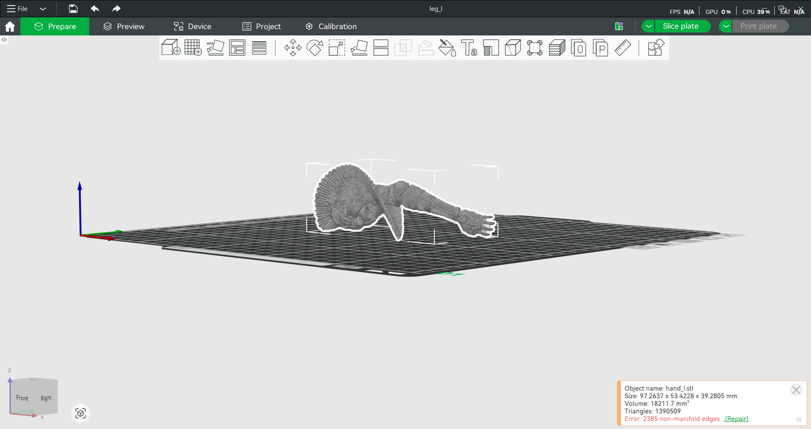

When I first got my first 3D printer, an A1 Bambu printer, I had the intent to print high-quality figures. After a lot of trial and error with researching, testing, and refining, I have honed a process that I found works best for me to print intricate models using a non-resin printer. The quality contests resin printers and is perfect for people who want to invest in minimal gear and avoid the health risks related to resin.
Here is the list of all the software and tools I use to create quality prints ready for painting.
A very optional step if you are using other creators' models. However, having some experience with a software like Blender (organic models, STLs) or AutoCAD (geometric, STEP) can help users tweak models if needed. Most pre-made designs will be ready to be imported into slicers without a model program, so it is best to try slicing models first.

Typically, all common 3D files are compatible in slicers like Bambu Studio. Import the file, which depending
on the complexity and hardware power, may take some time. This arm for me took about 2 minutes.
Once imported, you may get error messages, such as "non-manifold edges detected" or "over a million triangles". These
can be ignored for the most part. Once you process the model and notice visual issues like tearing in the model,
then fixing the non-manifolds may fix the issue.
Next is to check the print settings that correspond to the parts and specifics that I need to make these complex prints work.
Depending on the filament, print bed, and nozzle, there are many settings that need to be altered.
Nozzle Size: 0.4mm Hardened Steel Nozzle
The lowest print layer size this nozzle can go to is 0.08mm. The smaller the layer size,
the more detailed a print can get. This is more than sufficient for me as I tend to print larger-scale
statues/figures rather than miniatures. Having burned through several 0.2mm nozzles due to clogs, this
nozzle has been reliable for me without issues for over a year.
Build Plate: Cyrogrip Pro Frostbite
The stock build plate is pretty sufficient, but at 15 dollars, this plate is a much-needed upgrade to
ensure that print supports stay on the plate. Supports need to stay on these prints; otherwise, a
failed print is highly likely, with a risk of clogging the nozzle without intervention. If
supports/prints are being removed from the plate, clean with dish soap with no additives.
If you are using a nonproprietary build plate, change the settings according to the guidelines set by
the manufacturer.
Filament: PLA (many brands are compatible)
I typically have no preference over filaments, but some will be more consistent than others.
I personally use Elegoo PLA+, which has minimized failures for me at a cheap price. Settings
will need to be changed, and typically the config file for the filament from the manufacturer is
available when searched online for it. Import this file as a custom filament.
Under the Quality tab
Not too many settings will be changed here, but there are a few essential ones that make these detailed prints possible.
Change layer height to 0.08mm for the most detailed prints with a 0.4mm nozzle. Leave the initial layer height alone.
Scroll down to ironing. These settings are optional to alter, but can make smoother surfaces.
Change “no ironing” to “topmost surfaces” and the base settings here are okay to use. Ironing may
make print times slightly longer and alter print surfaces, so it is best to experiment with this
setting.
Scroll to wall generator and change it to Archane. This allows for prints to allow for less geometric walls
and have looser restrictions on the details it can print.
Under the Strength tab
Only one setting will be changed under here that is essential, but the some other settings,
like the wall loops, can increase strength.
Scroll all the way to Sparse Infill and change the pattern to Gyroid. This pattern will help in
reducing the risk of knocking the print off the bed, as the nozzle will not cross over filament
that has just been printed and not yet cooled.
Under the Speed tab
Many settings will be changed here to ensure that each small layer has enough time to cool and
reduce risks of print failure (improper surfaces, taken off print bed, unfinished details).
Outer Wall: 60mm/s
Inner Wall: 120mm/s
Sparse Infill: 150mm/s
Internal Solid Infill: 120mm/s
Top Surface: 150mm/s
Normal Printing (under acceleration): 4000mm/s
Under the Support tab
Another tab with many settings changed. These support settings are what I use for any print layer size that balances strength and ease in removal. Always enable support when printing high-detail prints.
Type: Tree (auto)
Threshold Angle: 25
Turn on “On Build Plate Only”
The following settings are listed under Advanced for supports.
Initial Layer Density: 90
Support Wall Loops: 2
Top Z Distance: 0.16mm
Bottom Z Distance: 0.16mm
Top Interface Layers: 3
Support/object xy distance: 0.35mm
Under the Other tab
To ensure the print does not fail due to poor bed adhesion, enable a brim. This makes it
easier to take off the print after and helps the supports cling to the bed.
Brim-Type: Outer Brim Only
Brim Width: 3mm
Brim-object gap: 0.3mm
Sometimes the print will fail due to several reasons; every printer and user will
experience
different issues, but here are some that I ran into that worked out for me.
Nozzle clogging can render the whole part useless and need replacement. As I said, I burned
through several stainless steel 0.2mm nozzles within about 50-80 hours of printing per one.
Hardened steel is not an option for 0.2mm, but it is for 0.4mm. I have had this one for over a year,
and it has never failed on me after over 1000 hours of printing.
Wet filament can create pockets of water that make the print fail and create holes in the print,
which reduces the strength and smoothness. I highly recommend a dryer that will be turned on
whenever you print. I have a Sunlu S2, since I only print with one color.
Bed adhesion is also a large contributor to a successful print. If a major support or the whole print
itself is removed from the bed, the printer will often continue printing and make a mess of an
unfinished print. When supports are failing, either dry the filament, wash the build plate,
or re-orient the model in the slicer and potentially manually add support areas
(right-click model to brush on support areas).
Rough surfacing due to the supports is possible. Printing a detailed print with FDM or plastic will
never be as good as a resin printer. Often, some surfaces will be less than ideal.
Strategically, it is best to place the supports on smoother surfaces or areas that will be
less likely to be seen at the angle at which the finished print will be viewed.
In any case, whether a smooth print or not, it is best to post-process the print with sanding.
Now that the print has manifested into reality, it needs a lot of cleanups. Typically, with these
prints, a lot of plastic waste is created, so it is best to do the cleanup in a controlled environment.
Keep track of the scraps and clean up as needed.
Use clippers, pliers, or cutters to take off the supports. Some parts of the print,
depending on their strength, will need to be processed carefully and slowly. It’s important
to be patient as more supports will take a lot of time. Any broken parts can be repaired with
superglue. I prefer Loctite superglue liquid.
Once supports are off, a common trick to remove small hairs still on the print is to get a lighter
and burn them off. Bring the lighter about two inches away from the print. Act quickly and move the
lighter swiftly around the print to remove these hairs without igniting the whole print.
Sanding after is needed for removing harsh surfaces and cleaning detail. Use a gradual decrease
in sanding coarseness, smooth the edges until satisfied. I use a sanding block with various coarseness
and then finish with a glass nail file. This print came out pretty clean after removing supports, so
I minimally sanded it.